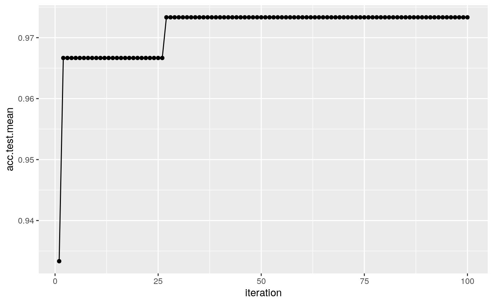

Many machine learning algorithms have hyperparameters that need to be set. If selected by the user they can be specified as explained on the tutorial page on learners – simply pass them to makeLearner(). Often suitable parameter values are not obvious and it is preferable to tune the hyperparameters, that is automatically identify values that lead to the best performance.
In order to tune a machine learning algorithm, you have to specify:
An example of the search space could be searching values of the C parameter for kernlab::ksvm():
# ex: create a search space for the C hyperparameter from 0.01 to 0.1
ps = makeParamSet(
makeNumericParam("C", lower = 0.01, upper = 0.1)
)An example of the optimization algorithm could be performing random search on the space:
# ex: random search with 100 iterations
ctrl = makeTuneControlRandom(maxit = 100L)An example of an evaluation method could be 3-fold CV using accuracy as the performance measure:
rdesc = makeResampleDesc("CV", iters = 3L)
measure = accThe evaluation method is already covered in detail in evaluation of learning methods and resampling.
In this tutorial, we show how to specify the search space and optimization algorithm, how to do the tuning and how to access the tuning result, and how to visualize the hyperparameter tuning effects through several examples.
Throughout this section we consider classification examples. For the other types of learning problems, you can follow the same process analogously.
We use the iris classification task (iris.task()) for illustration and tune the hyperparameters of an SVM (function kernlab::ksvm()) from the kernlab package) with a radial basis kernel. The following examples tune the cost parameter C and the RBF kernel parameter sigma of the kernlab::ksvm()) function.
We first must define a space to search when tuning our learner. For example, maybe we want to tune several specific values of a hyperparameter or perhaps we want to define a space from \(10^{-10}\) to \(10^{10}\) and let the optimization algorithm decide which points to choose.
In order to define a search space, we create a ParamSet (ParamHelpers::makeParamSet()) object, which describes the parameter space we wish to search. This is done via the function ParamHelpers::makeParamSet().
For example, we could define a search space with just the values 0.5, 1.0, 1.5, 2.0 for both C and gamma. Notice how we name each parameter as it’s defined in the kernlab package:
discrete_ps = makeParamSet(
makeDiscreteParam("C", values = c(0.5, 1.0, 1.5, 2.0)),
makeDiscreteParam("sigma", values = c(0.5, 1.0, 1.5, 2.0))
)
print(discrete_ps)
## Type len Def Constr Req Tunable Trafo
## C discrete - - 0.5,1,1.5,2 - TRUE -
## sigma discrete - - 0.5,1,1.5,2 - TRUE -We could also define a continuous search space (using makeNumericParam (ParamHelpers::makeNumericParam()) instead of makeDiscreteParam (ParamHelpers::makeDiscreteParam())) from \(10^{-10}\) to \(10^{10}\) for both parameters through the use of the trafo argument (trafo is short for transformation). Transformations work like this: All optimizers basically see the parameters on their original scale (from \(-10\) to \(10\) in this case) and produce values on this scale during the search. Right before they are passed to the learning algorithm, the transformation function is applied.
Notice this time we use makeNumericParam (ParamHelpers::makeNumericParam()):
num_ps = makeParamSet(
makeNumericParam("C", lower = -10, upper = 10, trafo = function(x) 10^x),
makeNumericParam("sigma", lower = -10, upper = 10, trafo = function(x) 10^x)
)Many other parameters can be created, check out the examples in ParamHelpers::makeParamSet().
In order to standardize your workflow across several packages, whenever parameters in the underlying R functions should be passed in a list structure, mlr tries to give you direct access to each parameter and get rid of the list structure!
This is the case with the kpar argument of kernlab::ksvm()) which is a list of kernel parameters like sigma. This allows us to interface with learners from different packages in the same way when defining parameters to tune!
Now that we have specified the search space, we need to choose an optimization algorithm for our parameters to pass to the kernlab::ksvm()) learner. Optimization algorithms are considered TuneControl() objects in mlr.
A grid search is one of the standard – albeit slow – ways to choose an appropriate set of parameters from a given search space.
In the case of discrete_ps above, since we have manually specified the values, grid search will simply be the cross product. We create the grid search object using the defaults, noting that we will have \(4 \times 4 = 16\) combinations in the case of discrete_ps:
ctrl = makeTuneControlGrid()In the case of num_ps above, since we have only specified the upper and lower bounds for the search space, grid search will create a grid using equally-sized steps. By default, grid search will span the space in 10 equal-sized steps. The number of steps can be changed with the resolution argument. Here we change to 15 equal-sized steps in the space defined within the ParamSet (ParamHelpers::makeParamSet()) object. For num_ps, this means 15 steps in the form of 10 ^ seq(-10, 10, length.out = 15):
ctrl = makeTuneControlGrid(resolution = 15L)Many other types of optimization algorithms are available. Check out TuneControl() for some examples.
Since grid search is normally too slow in practice, we’ll also examine random search. In the case of discrete_ps, random search will randomly choose from the specified values. The maxit argument controls the amount of iterations.
ctrl = makeTuneControlRandom(maxit = 10L)In the case of num_ps, random search will randomly choose points within the space according to the specified bounds. Perhaps in this case we would want to increase the amount of iterations to ensure we adequately cover the space:
ctrl = makeTuneControlRandom(maxit = 200L)Now that we have specified a search space and the optimization algorithm, it’s time to perform the tuning. We will need to define a resampling strategy and make note of our performance measure.
We will use 3-fold cross-validation to assess the quality of a specific parameter setting. For this we need to create a resampling description just like in the resampling part of the tutorial.
rdesc = makeResampleDesc("CV", iters = 3L)Finally, by combining all the previous pieces, we can tune the SVM parameters by calling tuneParams(). We will use discrete_ps with grid search:
discrete_ps = makeParamSet(
makeDiscreteParam("C", values = c(0.5, 1.0, 1.5, 2.0)),
makeDiscreteParam("sigma", values = c(0.5, 1.0, 1.5, 2.0))
)
ctrl = makeTuneControlGrid()
rdesc = makeResampleDesc("CV", iters = 3L)
res = tuneParams("classif.ksvm", task = iris.task, resampling = rdesc,
par.set = discrete_ps, control = ctrl)
## [Tune] Started tuning learner classif.ksvm for parameter set:
## Type len Def Constr Req Tunable Trafo
## C discrete - - 0.5,1,1.5,2 - TRUE -
## sigma discrete - - 0.5,1,1.5,2 - TRUE -
## With control class: TuneControlGrid
## Imputation value: 1
## [Tune-x] 1: C=0.5; sigma=0.5
## [Tune-y] 1: mmce.test.mean=0.0400000; time: 0.0 min
## [Tune-x] 2: C=1; sigma=0.5
## [Tune-y] 2: mmce.test.mean=0.0400000; time: 0.0 min
## [Tune-x] 3: C=1.5; sigma=0.5
## [Tune-y] 3: mmce.test.mean=0.0400000; time: 0.0 min
## [Tune-x] 4: C=2; sigma=0.5
## [Tune-y] 4: mmce.test.mean=0.0400000; time: 0.0 min
## [Tune-x] 5: C=0.5; sigma=1
## [Tune-y] 5: mmce.test.mean=0.0533333; time: 0.0 min
## [Tune-x] 6: C=1; sigma=1
## [Tune-y] 6: mmce.test.mean=0.0400000; time: 0.0 min
## [Tune-x] 7: C=1.5; sigma=1
## [Tune-y] 7: mmce.test.mean=0.0400000; time: 0.0 min
## [Tune-x] 8: C=2; sigma=1
## [Tune-y] 8: mmce.test.mean=0.0400000; time: 0.0 min
## [Tune-x] 9: C=0.5; sigma=1.5
## [Tune-y] 9: mmce.test.mean=0.0533333; time: 0.0 min
## [Tune-x] 10: C=1; sigma=1.5
## [Tune-y] 10: mmce.test.mean=0.0533333; time: 0.0 min
## [Tune-x] 11: C=1.5; sigma=1.5
## [Tune-y] 11: mmce.test.mean=0.0466667; time: 0.0 min
## [Tune-x] 12: C=2; sigma=1.5
## [Tune-y] 12: mmce.test.mean=0.0466667; time: 0.0 min
## [Tune-x] 13: C=0.5; sigma=2
## [Tune-y] 13: mmce.test.mean=0.0600000; time: 0.0 min
## [Tune-x] 14: C=1; sigma=2
## [Tune-y] 14: mmce.test.mean=0.0533333; time: 0.0 min
## [Tune-x] 15: C=1.5; sigma=2
## [Tune-y] 15: mmce.test.mean=0.0466667; time: 0.0 min
## [Tune-x] 16: C=2; sigma=2
## [Tune-y] 16: mmce.test.mean=0.0533333; time: 0.0 min
## [Tune] Result: C=1.5; sigma=0.5 : mmce.test.mean=0.0400000
res
## Tune result:
## Op. pars: C=1.5; sigma=0.5
## mmce.test.mean=0.0400000tuneParams() simply performs the cross-validation for every element of the cross-product and selects the parameter setting with the best mean performance. As no performance measure was specified, by default the error rate (mmce) is used.
Note that each measure (makeMeasure()) “knows” if it is minimized or maximized during tuning.
Of course, you can pass other measures and also a list of measures to tuneParams(). In the latter case the first measure is optimized during tuning, the others are simply evaluated. If you are interested in optimizing several measures simultaneously have a look at Advanced Tuning.
In the example below we calculate the accuracy (acc) instead of the error rate. We use function setAggregation(), as described on the resampling page, to additionally obtain the standard deviation of the accuracy. We also use random search with 100 iterations on the num_set we defined above and set show.info to FALSE to hide the output for all 100 iterations:
num_ps = makeParamSet(
makeNumericParam("C", lower = -10, upper = 10, trafo = function(x) 10^x),
makeNumericParam("sigma", lower = -10, upper = 10, trafo = function(x) 10^x)
)
ctrl = makeTuneControlRandom(maxit = 100L)
res = tuneParams("classif.ksvm", task = iris.task, resampling = rdesc, par.set = num_ps,
control = ctrl, measures = list(acc, setAggregation(acc, test.sd)), show.info = FALSE)
res
## Tune result:
## Op. pars: C=15.5; sigma=0.0345
## acc.test.mean=0.9600000,acc.test.sd=0.0000000The result object TuneResult() allows you to access the best found settings $x and their estimated performance $y.
res$x
## $C
## [1] 15.52092
##
## $sigma
## [1] 0.03449146
res$y
## acc.test.mean acc.test.sd
## 0.96 0.00We can generate a Learner (makeLearner()) with optimal hyperparameter settings as follows:
lrn = setHyperPars(makeLearner("classif.ksvm"), C = res$x$C, sigma = res$x$sigma)
lrn
## Learner classif.ksvm from package kernlab
## Type: classif
## Name: Support Vector Machines; Short name: ksvm
## Class: classif.ksvm
## Properties: twoclass,multiclass,numerics,factors,prob,class.weights
## Predict-Type: response
## Hyperparameters: fit=FALSE,C=15.5,sigma=0.0345Then you can proceed as usual. Here we refit and predict the learner on the complete iris (datasets::iris()) data set:
m = train(lrn, iris.task)
predict(m, task = iris.task)
## Prediction: 150 observations
## predict.type: response
## threshold:
## time: 0.00
## id truth response
## 1 1 setosa setosa
## 2 2 setosa setosa
## 3 3 setosa setosa
## 4 4 setosa setosa
## 5 5 setosa setosa
## 6 6 setosa setosa
## ... (#rows: 150, #cols: 3)But what if you wanted to inspect the other points on the search path, not just the optimal?
We can inspect all points evaluated during the search by using generateHyperParsEffectData():
generateHyperParsEffectData(res)
## HyperParsEffectData:
## Hyperparameters: C,sigma
## Measures: acc.test.mean,acc.test.sd
## Optimizer: TuneControlRandom
## Nested CV Used: FALSE
## Snapshot of data:
## C sigma acc.test.mean acc.test.sd iteration exec.time
## 1 2.3397773 -3.5124226 0.9466667 0.01154701 1 0.027
## 2 4.0521330 -7.6211727 0.4200000 0.19078784 2 0.029
## 3 -0.9581277 -7.0855536 0.4200000 0.19078784 3 0.029
## 4 -9.7456136 -0.5559055 0.4200000 0.19078784 4 0.030
## 5 -1.1553551 1.1788559 0.3600000 0.08717798 5 0.032
## 6 2.3742768 0.2438430 0.9533333 0.01154701 6 0.030Note that the result of generateHyperParsEffectData() contains the parameter values on the original scale. In order to get the transformed parameter values instead, use the trafo argument:
generateHyperParsEffectData(res, trafo = TRUE)
## HyperParsEffectData:
## Hyperparameters: C,sigma
## Measures: acc.test.mean,acc.test.sd
## Optimizer: TuneControlRandom
## Nested CV Used: FALSE
## Snapshot of data:
## C sigma acc.test.mean acc.test.sd iteration exec.time
## 1 2.186640e+02 3.073105e-04 0.9466667 0.01154701 1 0.027
## 2 1.127543e+04 2.392364e-08 0.4200000 0.19078784 2 0.029
## 3 1.101216e-01 8.211953e-08 0.4200000 0.19078784 3 0.029
## 4 1.796331e-10 2.780318e-01 0.4200000 0.19078784 4 0.030
## 5 6.992701e-02 1.509579e+01 0.3600000 0.08717798 5 0.032
## 6 2.367428e+02 1.753247e+00 0.9533333 0.01154701 6 0.030Note that we can also generate performance on the train data along with the validation/test data, as discussed on the resampling tutorial page:
rdesc2 = makeResampleDesc("Holdout", predict = "both")
res2 = tuneParams("classif.ksvm", task = iris.task, resampling = rdesc2, par.set = num_ps,
control = ctrl, measures = list(acc, setAggregation(acc, train.mean)), show.info = FALSE)
generateHyperParsEffectData(res2)
## HyperParsEffectData:
## Hyperparameters: C,sigma
## Measures: acc.test.mean,acc.train.mean
## Optimizer: TuneControlRandom
## Nested CV Used: FALSE
## Snapshot of data:
## C sigma acc.test.mean acc.train.mean iteration exec.time
## 1 0.496548 -4.788487 0.64 0.68 1 0.017
## 2 9.095208 8.350293 0.34 1.00 2 0.017
## 3 -1.904618 3.195934 0.34 0.68 3 0.019
## 4 6.863312 1.695167 0.54 1.00 4 0.018
## 5 -1.270327 -6.763619 0.64 0.68 5 0.017
## 6 -8.247310 5.305003 0.32 0.68 6 0.018We can also easily visualize the points evaluated by using plotHyperParsEffect(). In the example below, we plot the performance over iterations, using the res from the previous section but instead with 2 performance measures:
res = tuneParams("classif.ksvm", task = iris.task, resampling = rdesc, par.set = num_ps,
control = ctrl, measures = list(acc, mmce), show.info = FALSE)
data = generateHyperParsEffectData(res)
plotHyperParsEffect(data, x = "iteration", y = "acc.test.mean",
plot.type = "line")
Note that by default, we only plot the current global optima. This can be changed with the global.only argument.
For an in-depth exploration of generating hyperparameter tuning effects and plotting the data, check out Hyperparameter Tuning Effects.
Tuning works for all other tasks like regression, survival analysis and so on in a completely similar fashion.
In longer running tuning experiments it is very annoying if the computation stops due to numerical or other errors. Have a look at on.learner.error in configureMlr() as well as the examples given in section configure mlr of this tutorial. You might also want to inform yourself about impute.val in TuneControl().
As we continually optimize over the same data during tuning, the estimated performance value might be optimistically biased. A clean approach to ensure unbiased performance estimation is nested resampling, where we embed the whole model selection process into an outer resampling loop.